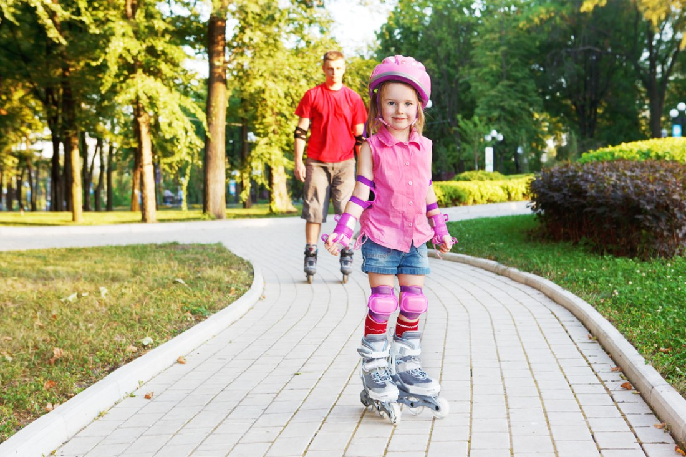
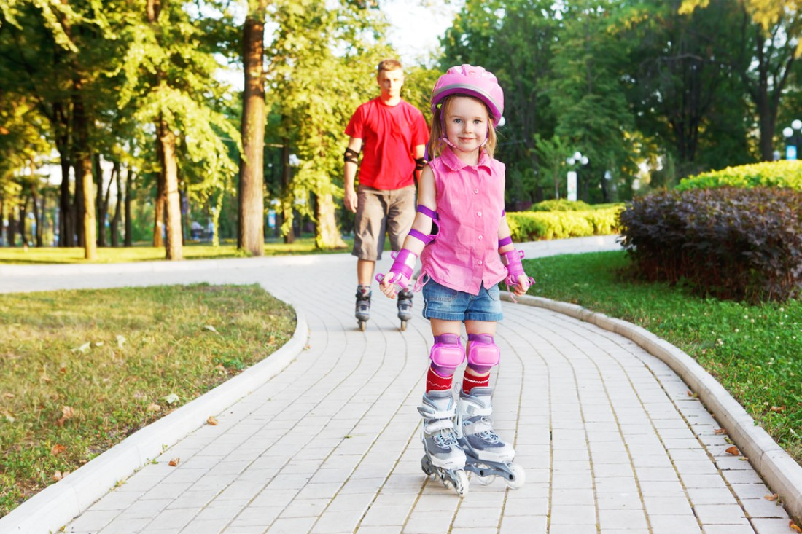

Велосипед или самокат?
В теплое время года улицы заполонены владельцами всевозможных видов легкого колесного транспорта. Глядя на них, пешеходы задумываются о том, как это удобно порою — иметь лёгкое транспортное средство, которое даёт возможность «прокатиться с ветерком»… Многие люди планируют покупку «двухколёсного транспорта», но не могут решить: велосипед или самокат…
Что касается детей, то специалисты, в зависимости от возраста, рекомендуют следующую последовательность освоения «транспортных средств»:
- 1–3 года — трёхколёсный велосипед (желательно с ручкой).
- 3–6 лет — по возможности, предоставить ребёнку и самокат (до 4–х лет — трёх– или четырёхколёсные, для детей постарше — с двумя колесами), и велосипед (двухколесный, лет до 4–5–ти желательно с приставными колёсами) — чтобы у ребёнка был выбор, да и в этом возрасте ребёнку очень важно постигать разнообразие всего окружающего. К тому же учиться держать равновесие — проще «поэтапно» (сначала на самокате, а потому уже на велосипеде).
- 6–12 лет — полноценный двухколесный детский велосипед или самокат (ребёнок будет уже готов выбрать — что ему больше нравится).
Стоит отметить, что самокат для ребёнка безопаснее велосипеда. На самокате сложно развить большую скорость — значит родителям будет проще догнать непослушного малыша. К тому же падения с велосипеда более травмоопасны, нежели с самоката. Немаловажно и то, что самокат намного легче велосипеда — дитя может самостоятельно выносить его на прогулку.
Для повышения безопасности, независимо от выбранного типа «транспорта», желательно приобрести ребёнку специальную экипировку: шлем, велоочки, перчатки, налокотники, наколенники. А первым делом — необходимо научить ребенка правильно тормозить и объезжать препятствия.
Велосипед — это достаточно «серьёзный» транспорт, потому в ПДД велосипедистам посвящена отдельная глава (если кратко, то — во многом они приравниваются к водителям прочих транспортных средств). Отсюда и следует логический вывод — любой владелец велосипеда (начиная с возраста 14–ти лет), использующий его для передвижения по дорогам общего пользования, обязан знать Правила Дорожного Движения (в возрасте до 14 лет — ребёнку запрещено выезжать на проезжую часть. Даже на детском велосипеде должны быть установлены светоотражающие элементы — чтобы транспорт был заметен другим участникам движения.
Лица, использующие для передвижения самокаты, роликовые коньки и иной подобный «транспорт» — относятся к пешеходам. Но сверхлёгких транспортных средств (уже не редко — электродвижимых) становится больше и они создают помехи при движении людей по тротуарам. Потому не исключено, что вскоре и их «упомянут в ПДД» — что, очевидно, ограничит возможности их использования… а пока, в частности от «наездников самокатов», требуется быть взаимовежливыми, проявлять аккуратность в движении… ну и ПДД изучить не помешает «для общего развития».
Оба эти вида транспорта способны принести пользу организму — приятные прогулки на свежем воздухе (желательно, конечно, в парке или сквере) вкупе с физической нагрузкой (без сильных перегрузок) полезны как взрослым, так и детям. Самокаты и велосипеды — в некоторой степени, спортивный инвентарь, который помогает поддерживать физическую форму. Более того — разминка на свежем воздухе полезнее, чем в тренажёрном зале.
- Езда на велосипеде/самокате способствует:
- развитию выносливости, внимательности, точной координации движений;
- тренировке мышц рук, ног, пресса, плечевого пояса;
- укреплению дыхательной и сердечно–сосудистой систем;
- насыщению тканей кислородом, улучшению обмена веществ;
- улучшению зрения (частая фокусировка взгляда на объектах расположенных на разном расстоянии — полезно для глаз);
- укреплению нервной системы (катание в парках и скверах действуют успокаивающе, поднимает настроение);
Детям с плохой координацией движения будет крайне полезно освоить технику езды на самокате. Но малышам нужна максимально ровная дорога — иначе вибрация негативно скажется на позвоночнике и коленных суставах. Лучше ограничить время езды до 60 минут в день.